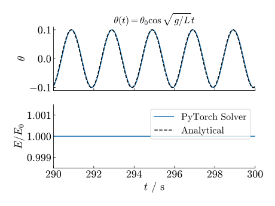
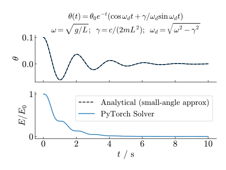
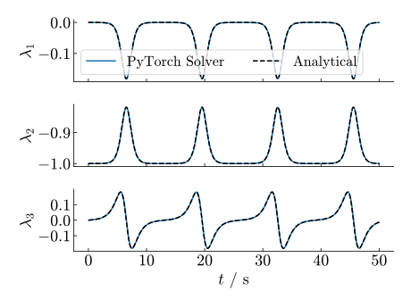

Lagrangian mechanics provides a mathematically beautiful and conceptually elegant framework for describing the dynamics of physical systems. Instead of focusing on forces as in Newtonian mechanics, it captures motion through an energy function. This formulation simplifies the treatment of complex systems with constraints which are traditionally hard to model using Newtonian mechanics.
By simply defining the energy of the system in terms of arbitrary generalized coordinates we can automatically simulate the dynamics of the system using PyTorch. It is almost like magic.
~ Classical Mechanics, Taylor 2004: Some purists object that the Lagrangian approach makes life too easy, removing the need to think about the physics.
This code is inspired by a post of Magnus Ross, I have made the following additions/contributions:
I will give a brief introduction which is rather mathematical, feel free to skip it and check the examples. You'll find the implementation on my GitHub.
Although the mathematics may appear intense, this framework is remarkably powerful — by simply defining the kinetic and potential energy terms, we can simulate complex dynamical systems with high accuracy.
If the video does not play, click on it to play.
Often due to symmetries or constraints it is often easier to describe a physical system's energy function in terms of generalized coordinates in comparison to a Newtonian force framework. For example a rollercoaster car, contrained to the rails. The Lagrangian $\mathcal{L}$ in terms of generalized coordinate $\mathbf{q}(t)\in\mathbb{R}^n$ is defined as:
$$ \mathcal{L}(\mathbf{q}, \dot{\mathbf{q}}) = T - V $$
where $T$ is the kinetic energy and $V$ is the potential energy. Hamilton's principle of least action leads to the Euler-Lagrange equations:
$$ \frac{d}{dt}\nabla_{\dot{\mathbf{q}}}\mathcal{L} = \nabla_\mathbf{q}\mathcal{L} $$
Equations of motion for the generalized coordinates can be derived using this relation. Thanks to the maturity of autograd tools like PyTorch we can numerically calculate the generalized acceleration $\ddot{\mathbf{q}}.$
EXAMPLE Simple Harmonic Oscillator in terms of angle $\mathbf{q}=(\theta)$, using a small angle approximation: $$ T = (mR^2\dot{\theta}^2)/2;\qquad V = (mgR\theta^2)/2;\qquad\mathcal{L}=T-V $$ Then, $$ \frac{d}{dt}\nabla_{\dot{\mathbf{q}}}\mathcal{L} = \frac{d}{dt}(mR^2\dot{\theta}) = mR^2\ddot{\theta} $$ and $$ \nabla_\mathbf{q}\mathcal{L} = -mgR\theta. $$ Which results in the equation of motion: $$ \ddot{\theta} + \frac{g}{R}\theta = 0. $$
In the paper Lagrangian Neural Networks, authors derive using the chain rule on the lhs:
$$ \frac{d}{dt}\nabla_{\dot{\mathbf{q}}}\mathcal{L} = (\nabla_{\dot{\mathbf{q}}}\nabla_{\dot{\mathbf{q}}}^\intercal\mathcal{L})\ddot{\mathbf{q}} + (\nabla_{\mathbf{q}}\nabla_{\dot{\mathbf{q}}}^\intercal\mathcal{L})\dot{\mathbf{q}} = \nabla_{\mathbf{q}}\mathcal{L}. $$
Note,
$$ (\nabla_{\dot{\mathbf{q}}}\nabla_{\dot{\mathbf{q}}}^\intercal\mathcal{L})_{ij} = \frac{\partial^2\mathcal{L}}{\partial\dot{q}_j\partial\dot{q}_i} $$
and
$$ (\nabla_{{\mathbf{q}}}\nabla_{\dot{\mathbf{q}}}^\intercal\mathcal{L})_{ij} = \frac{\partial^2\mathcal{L}}{\partial{q}_j\partial\dot{q}_i} $$
are the lower-right and the lower-left quadrant of the Hessian of $\mathcal{L}$ respectively; we have a linear system of equations which can be found by solving the linear system:
$$ \mathbf{M}\ddot{\mathbf{q}} = \mathbf{f} $$
where $$ \mathbf{M} = (\nabla_{\dot{\mathbf{q}}}\nabla_{\dot{\mathbf{q}}}^\intercal\mathcal{L}), \quad\text{ and }\quad \mathbf{f} = [ \nabla_\mathbf{q}\mathcal{L} - (\nabla_{\mathbf{q}}\nabla_{\dot{\mathbf{q}}}^\intercal\mathcal{L})\dot{\mathbf{q}} ] $$
are the generalized mass matrix, and generalized force vector respectively, looks familiar huh haha.
The addition of the non-conservative dissipative term $Q(\dot{q})$ is straightforward, see Rayleigh dissipation function, for which we can write the Euler-Lagranage equations into:
$$ \frac{d}{dt}\nabla_{\dot{\mathbf{q}}}\mathcal{L} = \nabla_\mathbf{q}\mathcal{L} - \nabla_{\dot{\mathbf{q}}}Q. $$
Note this has no implication on finding $\ddot{\mathbf{q}}$ other subtracting $\nabla_{\dot{\mathbf{q}}}Q$ inside the square brackets of the force term:
$$ \mathbf{f} = [ (\nabla_\mathbf{q}\mathcal{L} - \nabla_{\dot{\mathbf{q}}}Q) - (\nabla_{\mathbf{q}}\nabla_{\dot{\mathbf{q}}}^\intercal\mathcal{L})\dot{\mathbf{q}} ]. $$
u = torch.tensor([t, *q, *qdot], requires_grad=True, dtype=torch.float64)
H = hessian(self.lagrangian, u)
M = H[self.n+1:, self.n+1:]
# J_L = dL/dq
J_L = jacobian(self.lagrangian, u)[1:self.n+1]
# J_Q = dQ/dq_dot (dissipative forces)
J_Q = jacobian(self.Q, u)[self.n+1:]
# Generalized forces F = J_L - J_Q - H @ qdot
F = (J_L - J_Q) - H[self.n+1:, 1:self.n+1] @ qdot
qddot = torch.linalg.solve(M, F)
Constraints can be added in the form of lagrange multipliers $\lambda\in\mathbb{R}^m$, where $m$ is the number of constraints of the system, and the holonomic constraint function $g:\mathbb{R}^n\to\mathbb{R}^m$ is a function of the generalized coordinates. For a feasible system configuration, that is:
$$ g(\mathbf{q}) = 0. $$
Take for example again the pendulum, now defined by coordinate $(x,y)$ instead of contrained coordinate $\theta$. The endpoint of the pendulum is constrained by:
$$ g_1(x,y) = x^2 + y^2 - R^2 = 0. $$
The lagrange multipliers are essentially extended coordinate to the original lagrangian:
$$ \mathcal{L}^* = \mathcal{L} + \lambda g(\mathbf{q}). $$
Substituting $\mathcal{L}^*$ for $\mathcal{L}$ results in:
$$ \mathbf{M}\ddot{\mathbf{q}} = \mathbf{f} + J_g^\intercal\lambda. $$
where $J_g$ is the Jacobian of $g$.
Since $g(\mathbf{q})=0$ must always hold, it's stationary, its time derivatives must be 0 as well:
$$ \frac{d}{dt}g(\mathbf{q}) = 0,\quad \frac{d^2}{dt^2}g(\mathbf{q}) = 0,\quad \dots $$
Taking time-derivative of $g:\mathbb{R}^n\to\mathbb{R}^m$:
$$ \frac{dg_i}{dt} = \sum_j \frac{\partial g_i}{\partial q_j} \dot{q}_j = (J_g \dot{\mathbf{q}} )_i \implies \frac{d}{dt}g(\mathbf{q}) = J_g \dot{\mathbf{q}} $$
Then taking the second time-derivative:
$$ \frac{d^2}{dt^2}g(\mathbf{q}) = \dot{J}_g \dot{\mathbf{q}} + J_g \ddot{\mathbf{q}}. $$
We can find an expression for $\dot{J}_g$ by
$$ (\dot{J}_g)_{ij} = \frac{d}{dt}\frac{\partial g_i}{\partial q_j} = \sum_k \frac{\partial^2 g_i}{\partial q_j \partial q_k} \dot{q}_k $$
from which we derive the identity
$$ (\dot{J}_g \dot{\mathbf{q}})_i = \dot{\mathbf{q}}^\intercal H_{g_i} \dot{\mathbf{q}}. $$
Plugging into the second time-derivative of $g$
$$ \frac{d^2}{dt^2}g(\mathbf{q}) = 0 \implies (J_g \ddot{\mathbf{q}})_i = -\dot{\mathbf{q}}^\intercal H_{g_i} \dot{\mathbf{q}} $$
Now we can solve for our generalized acceration $\ddot{\mathbf{q}}$ and Lagrange multipliers $\lambda$ simultaneously:
$$ \begin{cases} \mathbf{M}\ddot{\mathbf{q}} = \mathbf{f} + J_g^\intercal\lambda \\ (J_g \ddot{\mathbf{q}})_i = -\dot{\mathbf{q}}^\intercal H_{g_i} \dot{\mathbf{q}} \end{cases} $$
which can be written as the linear system
$$ \begin{pmatrix} \mathbf{M} & -J_g^\intercal \\ J_g & 0 \\ \end{pmatrix} \begin{pmatrix} \ddot{\mathbf{q}} \\ \lambda \end{pmatrix} = \begin{pmatrix} \mathbf{f} \\ -\dot{\mathbf{q}}^\intercal H_g\dot{\mathbf{q}} \end{pmatrix}. $$
In addition to previous code block, see GitHub for a full implementation.
Jg = jacobian(self.constraints, u)[:,1:self.n+1]
# TODO : this is not the most efficient way of doing ways
# g is computed `n_constraints` times now
gamma = torch.zeros(self.n_constraints, dtype=torch.float64)
for i in range(self.n_constraints):
g_i = lambda u_in: self.constraints(u_in)[i]
H_gi = hessian(g_i, u)[1:self.n+1, 1:self.n+1]
gamma[i] = -qdot @ H_gi @ qdot
# Ax = b
# [ M -Jg^T ] [ qddot ] [ F ]
# [ Jg 0 ] [ lambda] = [ gamma]
A = torch.zeros((self.n + self.n_constraints, self.n + self.n_constraints), dtype=torch.float64)
A[:self.n, :self.n] = M
A[:self.n, self.n:] = -Jg.T
A[self.n:, :self.n] = Jg
b = torch.cat([F, gamma])
x = torch.linalg.solve(A, b)
(qddot, lambdas) = (x[:self.n], x[self.n:])
Let's define the energy in terms of pendulum angle $\theta$ and using a small angle approximation such that we can compare our integration using the analytical solution:
$$ \begin{cases} \displaystyle T = \frac{mR^2\dot{\theta}^2}{2} \\ \\ \displaystyle V = \frac{mgR\theta^2}{2} \end{cases} $$
@dataclass
class Pendulum(LagrangianSolver):
m: float # [kg] mass `m` suspended
R: float # [m] at length `R`
g: float=9.81 # [m/s]
def T(self, u: torch.Tensor) -> torch.Tensor:
(t, theta, theta_dot) = u
return self.m * self.R**2 * theta_dot.square()/2
def V(self, u: torch.Tensor) -> torch.Tensor:
(t, theta, theta_dot) = u
return self.m * self.g * theta.square()/2
We let initial condition $\theta_0=0.1$ and $\dot{\theta_0}=0$, $t\in[0,300 \textrm{ s}]$ using 30k time-steps, and let $m=R=1$. Over a long period of integration the system's energy remains stable and close to the analytical solution. Yet the solution does drift a little, at $t=5\text{ min}$ the approximated phase-sift is around $\Delta t\sim 0.01\text{ s}$.

Instead of using our constrained coordinates, now we let the mass suspended, described as function of $\theta(t)$, to be directly defined by its position $(x(t),y(t))$, under the constraint:
$$ g(x,y) = x^2 + y^2 - R^2 = 0. $$
And energy functions $$ \begin{cases} \displaystyle T = \frac{m(\dot{x}^2 + \dot{y}^2)}{2} \\ \\ \displaystyle V = mg(y + R) \end{cases} $$
We can simply add a velocity-based damping term using
$$ Q = \frac{c\dot{\theta}^2}{2}, $$ where $c$ is the damping coefficient. However, now $\dot{\theta}$ is a function of $x$ and $y$.:
$$ \theta=f(x,y)\implies \dot{\theta} = \partial_x f(x,y) \dot{x} + \partial_y f(x,y) \dot{y} $$
by the chain-rule. Of course you can also use the autograd system to numerically calculate the gradients, see the Roller Coaster example. However, since $\tan \theta = -x/y$ is a simple expression:
$$ \frac{\partial \theta}{\partial x} = -\frac{y}{x^2 + y^2} \quad\text{and}\quad \frac{\partial \theta}{\partial y} = \frac{x}{x^2 + y^2} $$
From which we can obtain:
$$ \dot{\theta} = \frac{x}{x^2 + y^2} \dot{y} -\frac{y}{x^2 + y^2} \dot{x}. $$
@dataclass
class ConstrainedDampedPendulum(LagrangianSolver):
m: float
R: float
c: float
g: float = 9.81
def T(self, u: torch.Tensor) -> torch.Tensor:
t, x,y, xdot,ydot = u
return self.m*(xdot.square() + ydot.square())/2
def V(self, u: torch.Tensor) -> torch.Tensor:
t, x,y, xdot,ydot = u
return self.m*self.g*(y + self.R)
def Q(self, u: torch.Tensor) -> torch.Tensor:
# damping term
t, x,y, xdot, ydot = u
r2 = x.square() + y.square()
theta_dot = x/r2*ydot - (y/r2)*xdot
return self.c * theta_dot.square() / 2
def constraints(self, u: torch.Tensor) -> Tuple[torch.Tensor]:
t, x,y, xdot,ydot = u
# must have dim >= 1 for vector operations
return (x.square() + y.square() - self.R**2).unsqueeze(0)
Also is close with the analytical (small-angle) solution, using the constraints here automatically does not use the small-angle approximation

Let's consider the planets in our outer solar system (Jupiter, Saturn, Uranus, Neptune, and yes Pluto) relative to the sun. Let $\mathbf{x}_i$ denote the position of the $i$-th planet, $\dot{\mathbf{x}}_i$ its velocity, and $m_i$ its mass. Then the energy of our system:
$$ \begin{cases} \displaystyle T = \frac{1}{2}\sum_i m_i (\dot{\mathbf{x}}_i^\intercal\dot{\mathbf{x}}_i), \\ \\ \displaystyle V = -G\sum_{i=0}^n \sum_{j=0}^{i-1} \frac{m_im_j}{\|\mathbf{x}_i - \mathbf{x}_j\|}. \end{cases} $$
In here $n$ is the number of planets, and $G$ denotes the gravitational constant.
Index 0 denotes the sun. Since we consider our system relative to the sun, this fixes $\mathbf{x}_0(t)=0$ and $\dot{\mathbf{x}}_0(t) = 0$. Given this we can exclude them from the generalized coordinate vector in our numerical solver:
@dataclass
class SolarSystem(LagrangianSolver):
m: torch.Tensor # [solar_mass] masses of the planets
M: float # [solar_mass] mass of star
G: float = 2.95912208286e-4 # [au3 solar_mass-1 day-2]
def __post_init__(self) : self.n_planets = len(self.m)
def T(self, u: torch.Tensor) -> torch.Tensor :
x, xdot = u[1:].view(2,self.n_planets,3)
return (self.m * (xdot*xdot).sum(dim=1)).sum() / 2
def V(self, u: torch.Tensor) -> torch.Tensor :
x, xdot = u[1:].view(2,self.n_planets,3)
potential = torch.tensor(0., dtype=torch.float64)
for i in range(self.n_planets):
potential += self.M * self.m[i] / x[i].norm()
for j in range(i):
potential += self.m[i]*self.m[j] / (x[i] - x[j]).norm()
return -self.G * potential
Initial condition is taken from the book Geometric Numerical Integration, Ernst Haier. As you can see, orbits are quite stable over the integration period of 500 years.
If the video does not play, click on it to play.
Now you will see how powerful and general this framework gets; simulating the dynamics of complicated systems will be just a matter of formulating the energy!
Famously the Dzhanibekov effect is a classic example counterintuitive rotational dynamics, where a rigid body in zero gravity exhibits a surprising flip around its intermediate principal axis of inertia.
We setup the system as a bit different from the T-shape above, we have two rods connected as cross (90deg, see the video below). The rods both have length $2R$ and the intersection of the rods is placed at the origin. Rod 1 has a mass $m_1$ on both ends, and rod 2 has mass $m_2$ on both ends. The energy of the system
$$ \begin{cases} T = m_1\dot{\mathbf{r}_1}^2 + m_2\dot{\mathbf{r}_2}^2\\ V = 0 \end{cases} $$ in terms of position of one of the endpoints of rod 1 $\mathbf{r}_1$ and for rod 2 $\mathbf{r}_2$, we make use of the symmetry. We are in space now, so the potential function is 0, and $\mathbf{q}=(\mathbf{r}_1,\mathbf{r_2})$
Our rods are now constrained as follows:
$$ \begin{cases} g_1(\mathbf{q}) = \mathbf{r}_1^2 - R^2 \quad&\text{radius rod 1,}\\ g_2(\mathbf{q}) = \mathbf{r}_2^2 - R^2 \quad&\text{radius rod 2, and}\\ g_3(\mathbf{q}) = \mathbf{r}_1\cdot\mathbf{r}_2 \quad&\text{orthogonality.} \end{cases} $$
Now implementing this into our PyTorch framework:
@dataclass
class Dzhanibekov(LagrangianSolver):
R: float
m1: float
m2: float
def T(self, u: torch.Tensor) -> torch.Tensor:
(r1, r2, rdot1, rdot2) = u[1:].view(4, 3)
return self.m1 * rdot1 @ rdot1 + self.m2 * rdot2 @ rdot2
def constraints(self, u: torch.Tensor) -> Tuple[torch.Tensor]:
(r1, r2, rdot1, rdot2) = u[1:].view(4, 3)
return torch.stack([
(r1 @ r1 - self.R**2),
(r2 @ r2 - self.R**2),
(r1 @ r2)
])
Let $m_1=1/10$ kg and $m_2=1$ kg and $R=1$ m, and initial positions $\mathbf{r}_1 = R\hat{k}$, $\mathbf{r}_2 = R\hat{i}$. The tricky part for this problem to ensure we have a legal initial condition for the velocities. We define the angular velocity of the rigid body using $\omega = (0, 1/100, 1) \text{ rad/s}$.
Now velocities at point 1 and 2 can be found:
$$ \dot{\mathbf{r}}_1 = \mathbf{r}_1\times\omega \quad\text{and}\quad \dot{\mathbf{r}}_2 = \mathbf{r}_2\times\omega. $$
If the video does not play, click on it to play.
NOTE If your initial condition is not valid, the constraints will drift; always validate the constraint and energy functions.
I wrote a little symbolic procedure using SymPy to derive Lagrange multipliers symbolically, as long as there is not too much coupling between the coordinates it works. From this we find:
$$ \lambda_1 = -\frac{m_1}{R^2}\dot{\mathbf{r}}_1^2;\quad \lambda_2 = -\frac{m_2}{R^2}\dot{\mathbf{r}}_2^2;\quad \lambda_3 = -\frac{4\dot{\mathbf{r}}_1\dot{\mathbf{r}}_2}{R^2}\frac{m_1m_2}{m_1 + m_2}. $$
Using these we can check the if the solved Lagrange multipliers agree with the analytical solution:

We have $n$ carts on a track. Where some track is defined using a parametric definition: $x(q_i)$ and $y(q_i)$, in here $q_i(t)$ is the generalized (constrained) coordinate on the track of the $i$-th cart.
To find the velocities in Euclidean space we have to transform from the generalized coordinates: $$ \dot{x}_i = \frac{dx}{dq_i}\dot{q}_i;\qquad \dot{y}_i = \frac{dy}{dq_i}\dot{q}_i $$ We can easily numerically compute the derivates $x'$ and $y'$ using PyTorch's autograd system. For the potential we can simply use the $y$-coordinate.
This gives us the energy of the system:
$$ \begin{cases} \displaystyle T = \frac{m}{2} \sum_i (\dot{x}_i^2 + \dot{y}_i^2) \\ \\ \displaystyle V = mg\sum_i y_i \end{cases} $$
And we constrain the carts to be always $R$ apart from each other:
$$ g_{i,{i+1}} = (x_i - x_{i+1})^2 + (y_i - y_{i+1})^2 - R^2 = 0 $$
Since we have $n$ carts, this means we will have $n-1$ of such links.
The track consists of a straight part that transitions into a looping. When using a piecewise-definition, the transition of going from straight to looping will cause numerical instabilities which cause the constraint functions to drift. To fix this, I came up with a smooth transition function using a sigmoid function (as smoothed Heaviside) to ensure continuity of the track. It smoothly transitions the linear part into the looping.
This linear part is ensures it's easy to place the carts exactly the same distance apart. After the parametric curve transformation, equidistant points in the generalized $q$-domain, are not necessarily equidistant anymore in $x,y$-space.
You might use a spline definition of the track instead, but then you have to make sure you're able to compute the gradient w.r.t. generalized coordinate $q_i$.
@dataclass
class RollerCoaster(LagrangianSolver):
r0: float
m: float # [kg] mass
g: float=9.81 # [m/s]
@staticmethod
def mix(q): # logistic curve / sigmoid
return 1-1/(1 + (5*(q + torch.pi/2)).exp())
@staticmethod
def x(q):
flat = 3 * 10 * (torch.pi/2 + q)
loop = 10 * (torch.pi/2 + q + 1.8*torch.cos(q))
fac = RollerCoaster.mix(q)
return (1-fac)*flat + fac*loop
@staticmethod
def y(q):
flat = torch.zeros_like(q)
loop = 10 * (torch.sin(q) + 1)
fac = RollerCoaster.mix(q)
return (1-fac)*flat + fac*loop
def T(self, u: torch.Tensor) -> torch.Tensor:
(q, qdot) = u[1:].view(2, self.n)
dxdq = torch.autograd.functional.jacobian(self.x, q).diag()
dydq = torch.autograd.functional.jacobian(self.y, q).diag()
return self.m * ((dxdq**2 + dydq**2) * qdot.square()).sum() / 2
def V(self, u: torch.Tensor) -> torch.Tensor:
(q, qdot) = u[1:].view(2, self.n)
return self.m * self.g * self.y(q).sum()
def constraints(self, u: torch.Tensor) -> torch.Tensor:
(q, qdot) = u[1:].view(2, self.n)
r2 = self.x(q).diff().square() + self.y(q).diff().square()
return (r2 - self.r0**2)
If the video does not play, click on it to play.